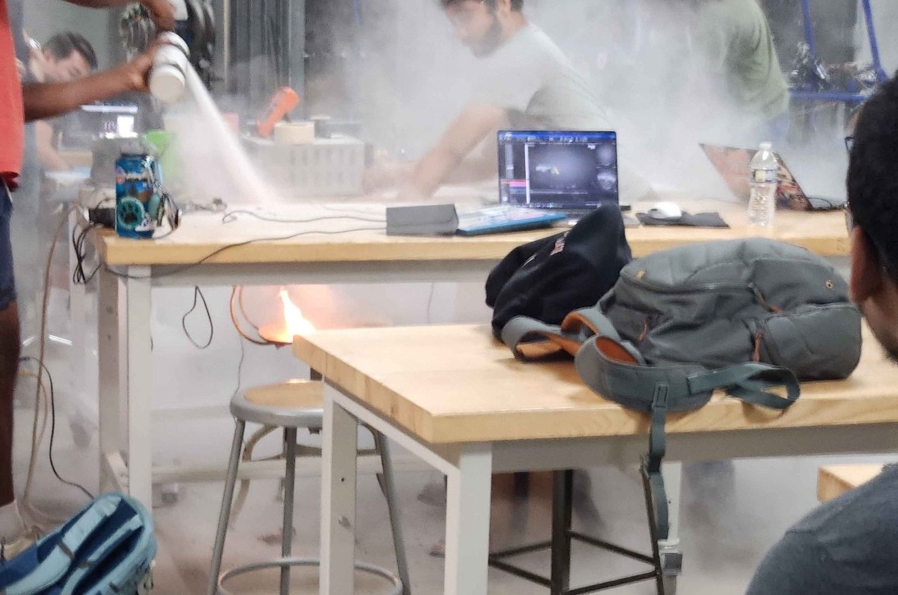

Engineering
Projects & Work
OVERVIEW.... This page covers the engineering projects both professional and personal, completed and ongoing, along with topics and technologies in the world of engineering that are worth paying attention to. More details about specific projects can be found on their project page. Think of this less as a portfolio and more as a window into what drives the work, and what I just find interesting.

Engineering Resources.... The following resources have been the most useful in the engineering process — providing critical insight, guidance, and information that made a real difference. There is no point in gatekeeping knowledge that could help the next person, so here are the ones worth knowing about.
| Books | Shigleys (Obviously), Machinery's Handbook, Desk Ref, Fundamentals of Machine Component Design, Fundamentals of Heat and Mass Transfer, CRC Handbook of Chemistry and Physics , Any languages or products documentation- these can just have the solution to your integration hell, Mark's Standard Handbook for Mechanical Engineers |
| Software | CAD (NX, Fusion, Soldiworks - there all the same), FEA - LS-dyna / Ansys - Simscale (free!), IDE - A well setup IDE makes programming less painful, falstad, Python- becasue why would you ever pay for MATLAB |
| Webpages | Tinywow.com, NIST.gov, eFunda.com, WolframAlpha / Desmos, Mcmaster Carr, Digikey, Anna's Archive |
To Be Continued.... A few things that are not yet started but are in the plans. I either have a lack of time, money or both preventing me from starting these.
- Custom Skateboard Mold — I want to CNC route a custom mold to lay my own skateboard decks, possibly make carbon fiber re-enforced boards
- EDC Leatherman — Design and make a leatherman that only has the tools that I use consistently and add replaceable blades
- ARA Stage Rally Car LFWD — Build a ARA spec rally car to compete in a national rally event
- Mountian bike — Make a bespoke full suspention mountian bike with geometry that best suits me. Welded aluminium frame, 150-140 mm front rear travel, 29".
- Buy and Delete LinkedIn — This is for the good of the world
Last Updated:
End of Page